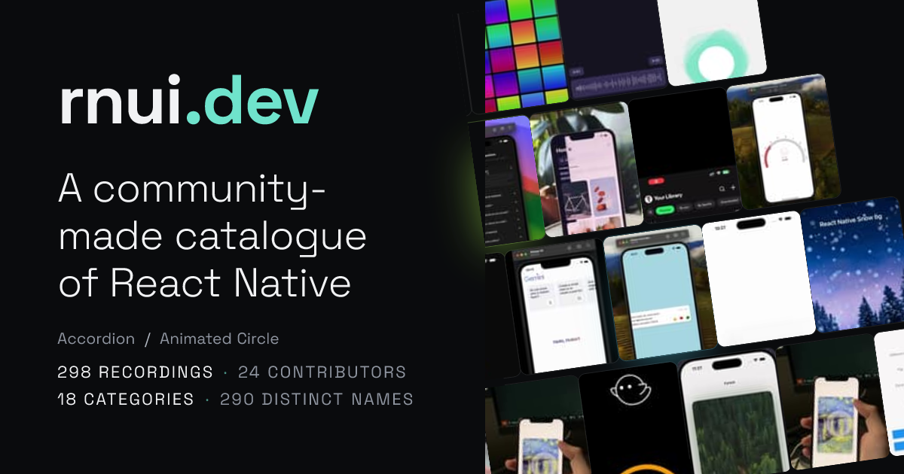
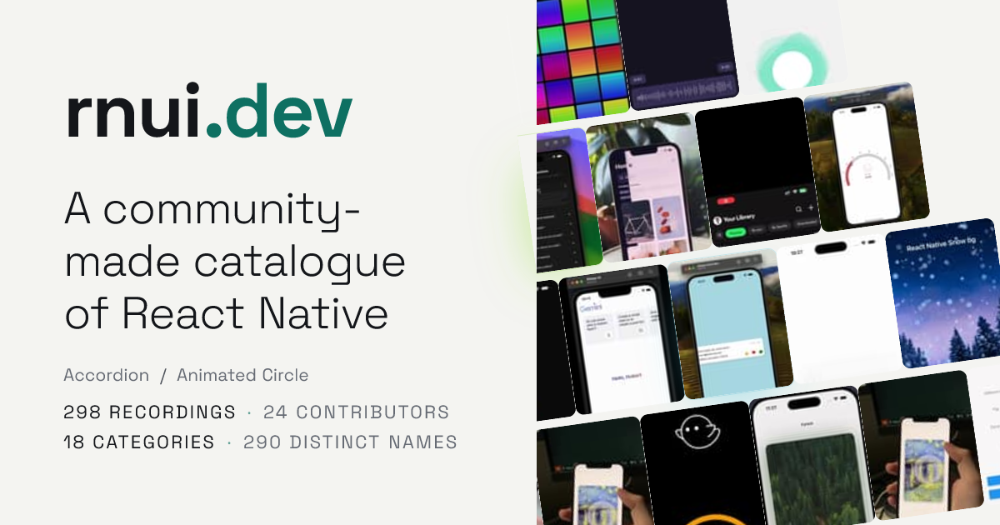
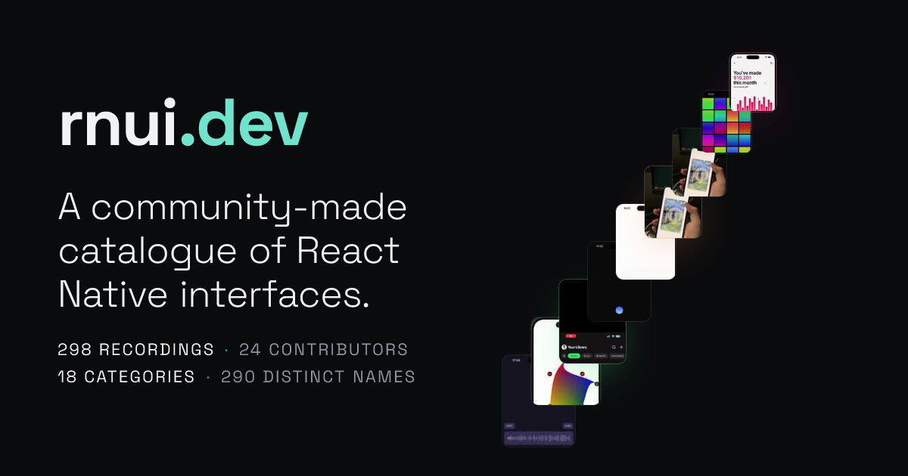
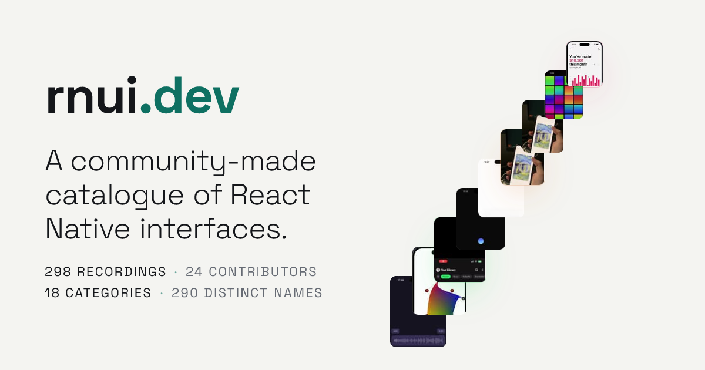
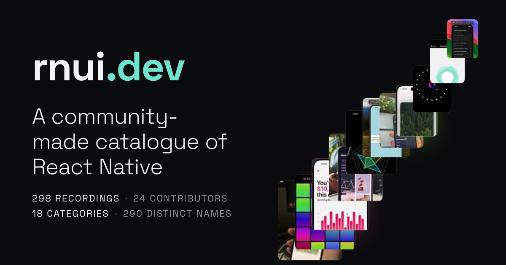
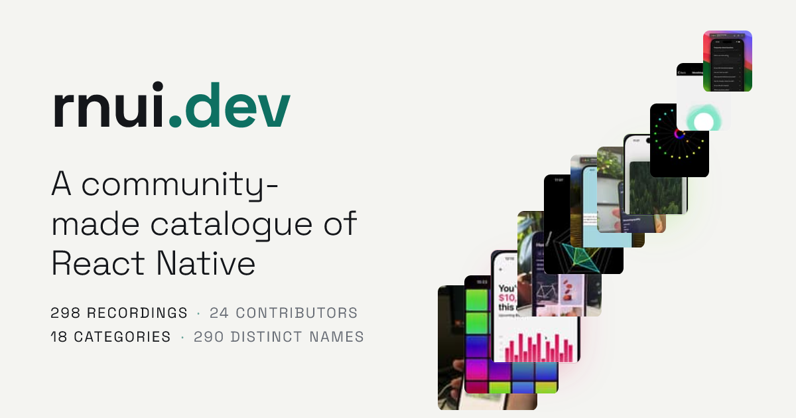
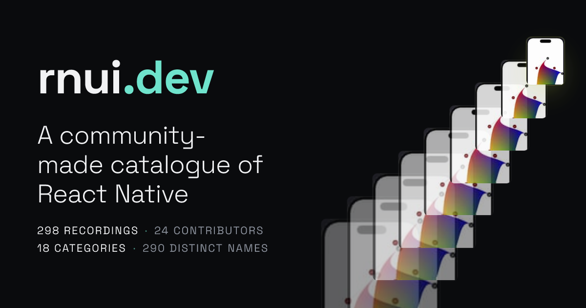
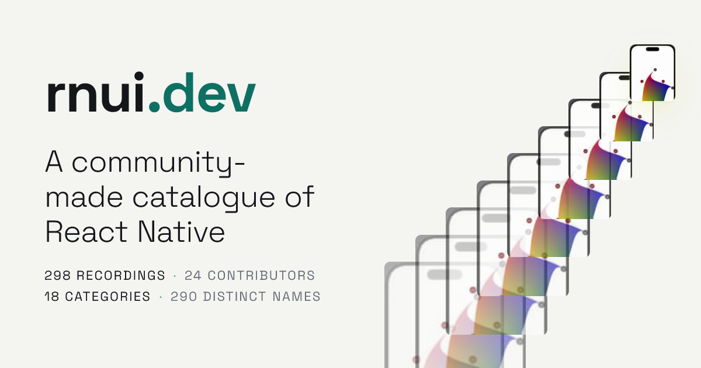
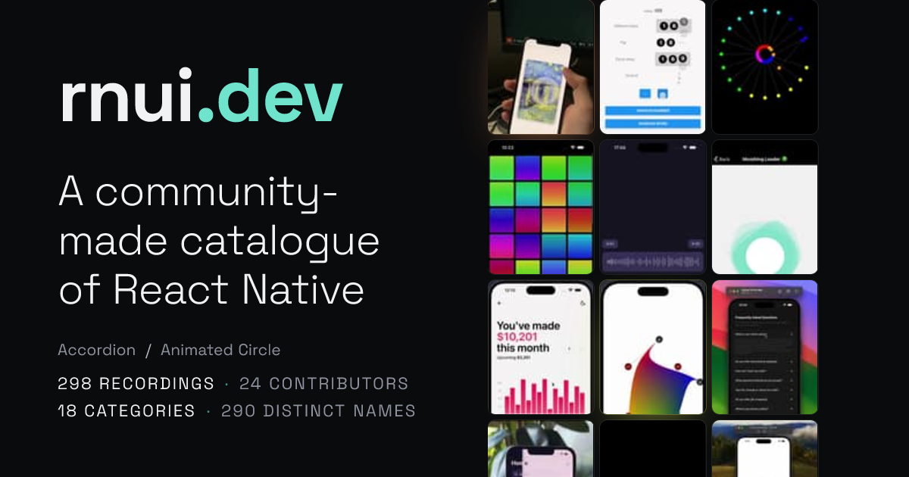
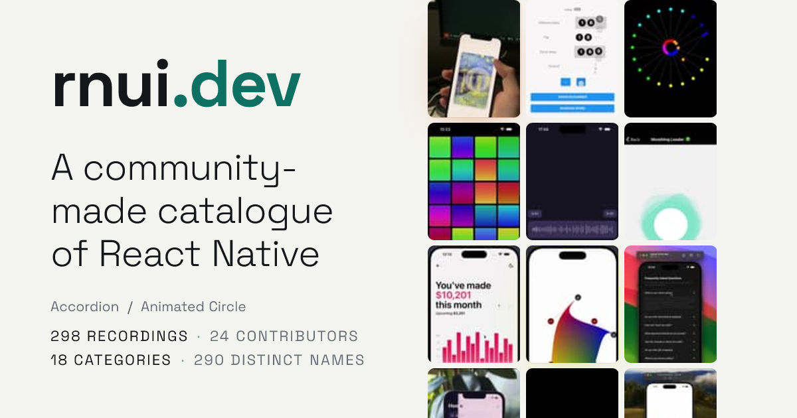
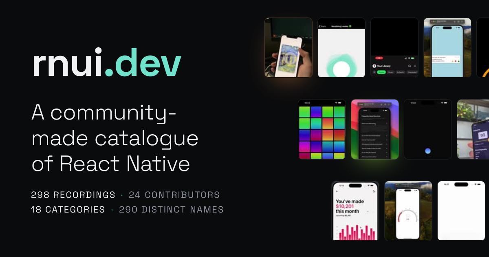
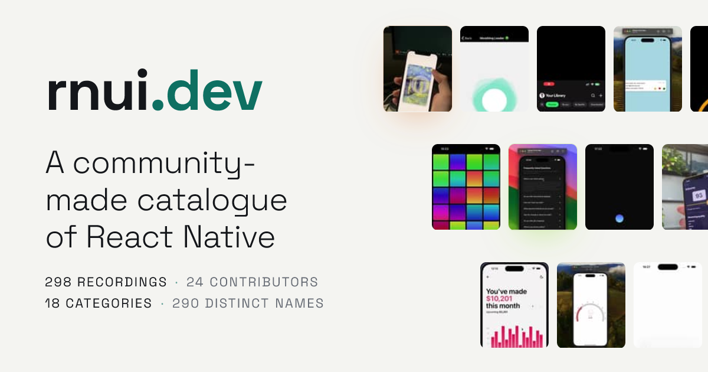
The chosen design with the confetti taken out — tiles abut into a band, glow on three
One continuous diagonal off two edges. A single gesture, not a field
The diagonal reversed — tiles funnel inward toward the name
One Poster repeated at falling scale. Repetition implies motion better than a diagonal
A strict edge-to-edge column; the left half is pure typography
Three offset rungs with a big gap between them and a small gap inside